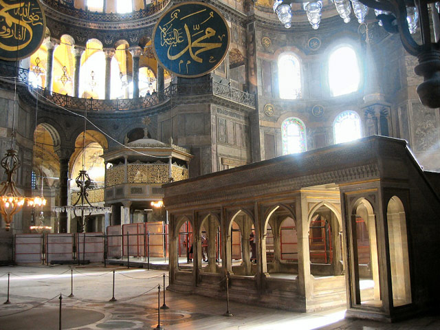

AYASOFYA
Ayasofya, (İngilizce Hagia Sophia, Yunanca Αγία Σοφία) İstanbul'da eski bir doğu kilisesi 1453 yılında İstanbul'un fethi ile camiye dönüştürüldü (Osmanlı da Fethiye Camii olarak adlandırılmıştır) 1935 yılında Atatürk'ün emri ile müzeye dönüştürülmüştür. Daha yapıldığı ilk yıllardan itibaren ihtişamı ve “erişilmez bir sınırsızlığı” temsil eden kubbesiyle herkesi şaşırtıp büyüleyen Ayasofya, 916 yıl boyunca kilise, 481 yıl da cami olarak hem Hıristiyanlığın, hem de Müslümanlığın hizmetinde bulundu. İlk yapıldığında Büyük Kilise (Megale Ekklesia) denilen bu muhteşem yapıt, Kutsal Bilgelik’e (Sofia) adandığından Ayia Sofia olarak tanınır, Fetih’ten sonra ise Ayasofya olarak anılmaya başlanır. Türkiye Cumhuriyeti’nin kurucusu Mustafa Kemal Atatürk’ün önerisi ve Bakanlar Kurulu’nun kararıyla 1935 yılında müze olarak tüm insanlığın ziyaretine açılan Ayasofya, Bizans İmparatoru İustinianos tarafından 532-537 yılları arasında yaptırıldı. Ayasofya aynı adla yaptırılan üçüncü yapı. İlk Ayasofya’nın yine aynı yerde Roma Dönemi’nden kalma eski bir tapınak üzerinde bazilikal tipte yapıldığı ve 15 Şubat 360 tarihinde görkemli bir törenle açıldığı tarih yazarı Sokrates tarafından anlatılıyor. Günümüzde hiçbir kalıntısı bulunmayan bu yapı, 404 yılında İmparator Arkadios’a karşı ayaklanan halk tarafından yakılır. İkinci Ayasofya ise, İmparator II. Teodosios tarafından yaptırılarak 10 Ekim 415’te ibadete açılır. Ancak, çok geçmeden bu yapı da bir başka isyan sonucunda, 13 Ocak 532’de yanar. İmparator I. İustinianos’un (527-565) beşinci saltanat yılında yaşanan Nika isyanının bastırılmasından sonra imparator, önceki yapılardan çok daha görkemli, asla yanıp yıkılmayacak bir mabedin yapılması emrini verir. Tarihçi Prokopios’un yapımı hakkında bilgiler verdiği 3. Ayasofya, Miletos’tan İsidoros ve Tralles’den Antemios adlı iki mimar tarafından yapılmaya başlanır. Yapım çalışmaları sırasında yüz usta, bin kalfa ve on bin işçi çalıştırılır. Yapının bir an önce bitirilmesini arzu eden İmparator İustinianos, eski kentlerden kalma güzel mimari parçaların Ayasofya’da kullanılmak üzere İstanbul’a gönderilmesini tüm eyaletlerine gönderdiği bir yazı ile emreder. Böylece Anadolu, Suriye, Mısır ve Yunanistan’ın antik şehirlerinden mimari parçalar, gemilerle Ayasofya’ya getirilir. Yapımına 23 Şubat 532’de başlanan 3. Ayasofya, süslemeleri dışında inanılması güç bir süre içinde, 5 yıl 10 ay 24 gün sonra bitirilerek, 27 Aralık 537’de ibadete açılır.
Yapının Özellikleri
Yerden 56.60 metre yükseklikteki kubbenin çapı 32.37 metre. Yapıldıktan yirmi iki yıl sonra büyük bir depremde yıkılan kubbenin, 562 yılında Miletos’lu İsidoros’un yeğeni Genç İsidoros tarafından onarılırken 2.65 metre yükseltildiği biliniyor. Kubbede bulunan kırk adet pencere açıklığı da tepeden aydınlatmaya yardımcı oluyor. Yapıldığı günden itibaren dünyanın en önemli anıtları arasında yer alan Ayasofya, uzun yıllar Ortodoksluğa hizmet verdikten sonra, IV. Haçlı Seferi sırasında İstanbul’un Latinlerin eline geçmesiyle 1203-1261 yılları arasında Katolik Dünyası için kullanıldı. Bu arada Latinlere borçlu olan İmparator IV. Aleksios, Ayasofya’nın değerli birçok eşyasını onlara vermek zorunda kaldı. Bu nedenle, Ayasofya’ya ait pek çok kutsal eşya halen Venedik’te bulunuyor. Ayasofya’da bugün görülebilen mozaikler gerçek birer sanat eseri. Alt katta, apsis yarım kubbesi içerisinde yer alan “Meryem ve Çocuk İsa” mozaiği, altın yaldız ve gümüş ağırlıklı parçalardan oluşuyor. Bu mozaikte Meryem’in elbisesi lacivert cam mozaiklerle işli. Meryem’in oturduğu taht, kıymetli mücevherlerle işlenmiş bir imparator tahtını anımsatıyor. Meryem ve Çocuk İsa’nın yüz güzelliği ise hayranlık uyandırıyor. Alt katta görülmesi gereken bir diğer mozaik de İmparator Kapısı’nın üstündeki VI. Leon’un yaptırdığı (886-912) mozaik. Bu sahnede VI. Leon, secde ederek İsa’dan günahlarını affetmesini dilerken gösteriliyor. Ayasofya’nın iç narteksinin yan kapısında yer alan bir başka mozaikte ise iki imparator ve Meryem ile Çocuk İsa yer alıyor. İmparatorlardan biri İstanbul’a adını veren I. Konstantin’dir. İmparator elinde tuttuğu kent maketini Meryem ve İsa’ya sunar. Diğer imparator ise Ayasofya’yı yaptıran I. İustinianos’tur. O da elindeki Ayasofya maketini Meryem ve İsa’ya sunar. Ayasofya’nın üst katında güney galeride Deisis mozaiği ile imparatorluğun iki ailesine ait, İmparatoriçe Zoe-IX. Konstantinos Monomakos (11. yy.) ve II. İoannes Komnenos, karısı Eirene ve oğlu Aleksios (12. yy.) mozaikleri yer alıyor. Kuzey galeride ise İmparator Aleksandros’un mozaiği bulunuyor (10. yy).Ayasofya’nın cami olarak kullanıldığı dönemde yapının dışına farklı zamanlarda dört minare ilave edilir. Mimar Sinan Ayasofya’nın dışına yaptığı payandalarla yapının dayanıklılığını arttırarak, günümüze kadar gelmesini sağlar. Ayasofya’nın içinde yapılan ilaveler ise, apsis içindeki mihrap ve mihrabın iki yanındaki tunç kandiller (Budin’den) mermer işlemeli minber, hünkar mahfili ve müezzin mahfilleridir. Ayrıca, Sultan I. Mahmud Dönemi’nde kütüphane yaptırıldığı da biliniyor. Yapılan ilavelerde yapının uyumuna dikkat edilmiş, mermer malzeme kullanılarak organik bağ devam ettirilmeye çalışılmış. Kubbedeki yazı ve büyük levhalar (Allah, Muhammed ve dört halife) ise